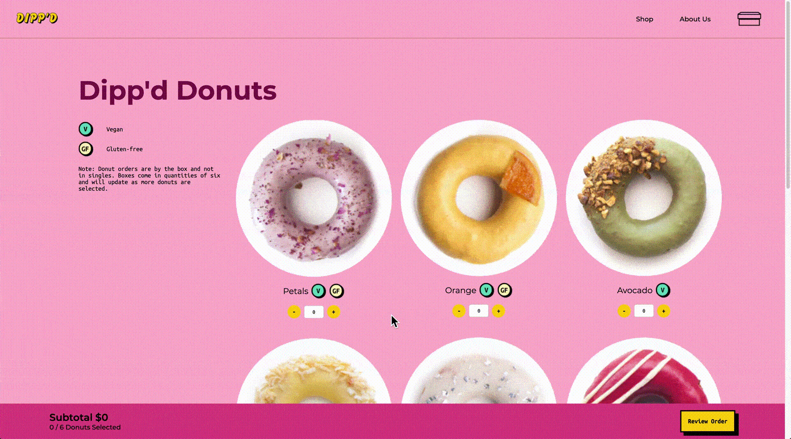

Dipp'd Donuts
Dipp'd is a fictional donut shop based in Toronto, Ontario. Dipp'd is looking to expand their business by allowing online purchases for either delivery or pickup.
Interaction Designer, Copywriter, Front-end Developer
Figma, HTML, CSS, Javascript
3 Months
An e-commerce site to allow Dipp'd Donuts to expand their business as well as to reflect their business identity. An exploration around the Dipp'd brand as well as seamless online shopping experience.
Dipp'd: The Brand
Dipp'd is a donut shop located in Toronto, Ontario and specializes in colourful and unique donuts to match the personalities of their clients. They are looking to scale their business and reach a larger audience by creating jumping onto the e-commerce trend.
In order to meet the needs of our client, the team developed an Art Direction and Brand Strategy in combination of UX Research to build a solution.
UX Research
The team first started the project by looking at precedent e-commerce sites that were used to conduct user research to get a sense of what the goals of users and the client would look like. The following sites that are examined were:
User-Testing
User-testing was conducted with six individuals ranging from the ages of 22-50. The user-testing was based on memory retention, CTA clickability, and the general checkout process. Reflecting the results of the user-testing, the following goals for the client and users were created:
The Direction
The team created a moodboard to be on the same page in terms of art direction. Images that show the essense of the brand as well as colours that may potentially be used was compiled to make the moodboard.
Design Pattern
Colours were used in the site to categorize different sections that provided information.
- Violet: Primary colour for the brand of Dipp'd
- Yellow: Signifies interactability
- Teal: Information pages
- Magenta: Shoppings pages
A complete pattern library that helped keep the team on the same page was created to refer back to. Repeated module, code snippets, the site map, wireframes, and mockups are included in the pattern library. The pattern library can be viewed here.
Interactions
Landing Page

Visitors are met with a splash of colours to introduce the brand identity as well as the colour system.
Social Media Carousel

From our user research, customer testimonals were very important for the user to trust the website. A social media carousel was created to showcase current clientale. The carousel is activated on drag and the user will be able to view different social media posts that were uploaded by existing clientale.
Shop Page
Through user research, it was found that when users decide on buying donuts, they look at only the name of the donut as well as the photo. In the case they have dietary restrictions, they search for symbols. As their decision to purchase a certain type of donut was limited, the team decided to not include separate product pages but utilize the hover interaction to show product details.
Reflection
As a designer, it was an eye-opening experience to hand-code a whole e-commerce site for the first time. It is important for designers to know the process from a front-end developer's perspective as it helps with understanding what is feasible and what is not. I am proud of my team and I for straying away from our comfort of using black and white and experimenting with colour. Through this project, I am proud to say that we are not afraid of using colour like we used to be and we now understand the power of colour. I want to also thank David and Jonathan for being the best group mates! We definitely pushed each other to design and code to the best of our abilities and I really look forward to see what we can do in the future.